小禾 · Web 用户端打磨版（unslop）
左边是 11-04 的 Web 方案 B 原稿（W1 居中一列，8 个小窗），右边按 1440 × 900 重画。Web 用户端和 App 用同一套逻辑和样式（iOS 打磨版的主色 #3F6EE8、冷灰底、字号、简报卡、出处行），只多两样 Web 才有的：看原文在右侧展开、键盘快捷键（Enter 开始、→ 下一件、L 稍后、Ctrl K 搜索）。内容一列 600 宽，顶栏左边“管家”按钮、中间三个标签、右边头像。演示人物陆航，周五 16:00。
原稿 · ① 简报封面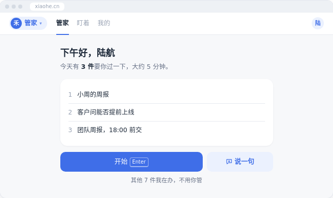
打磨版 · 打开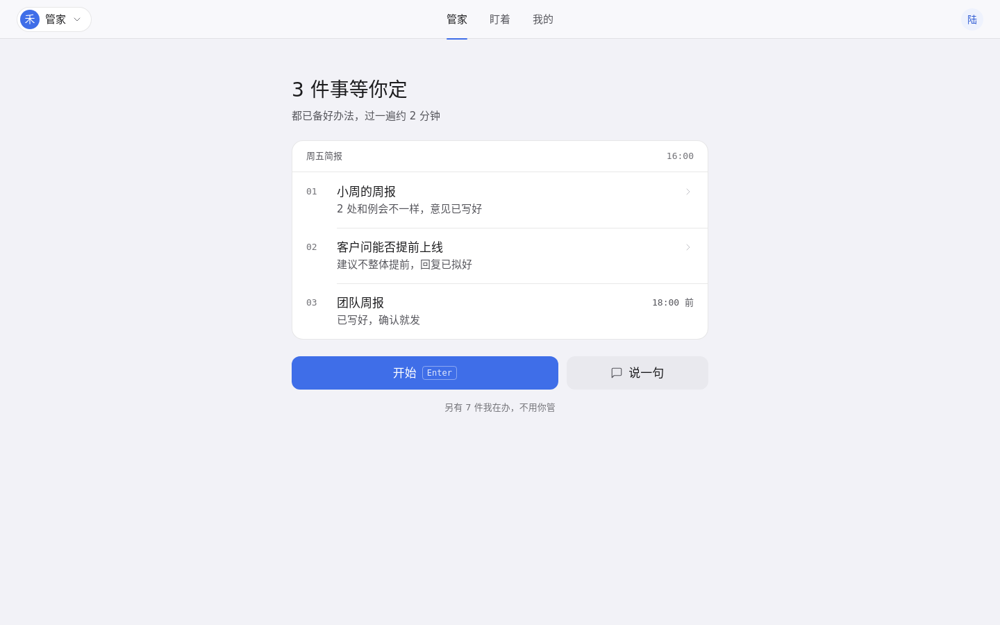
改了什么
- 问候“下午好，陆航”换成“3 件事等你定”，和 App 打磨版同一句
- 三件事做成“周五简报”卡：等宽件号 01–03，截止时间放右侧
- 开始 / 说一句仍是 7 : 3，Enter 键帽改成按钮内的浅色描边
原稿 · ② 一件一件过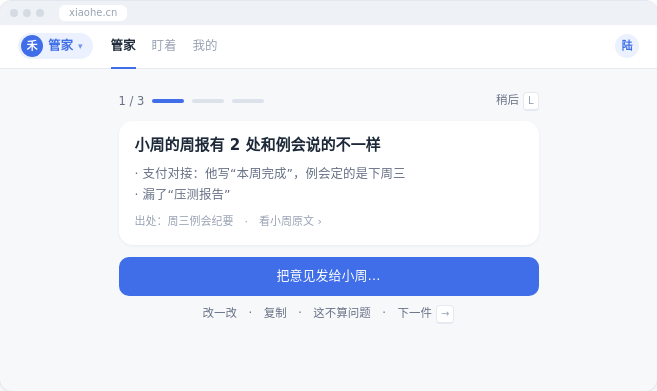
打磨版 · 打开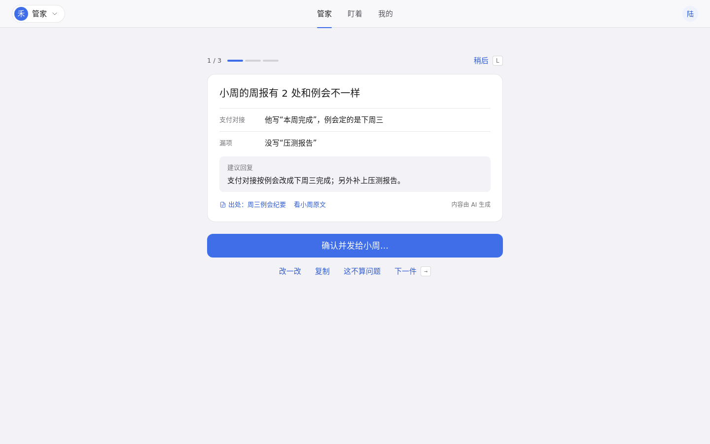
改了什么
- 差异项改成“标签 + 内容”两列，补上“建议回复”，和 App 一致
- “出处”行加文件图标，“看小周原文”在旁边
- “改一改 · 复制 · 这不算问题 · 下一件”拆成独立文字按钮，快捷键用键帽
原稿 · ③ 看原文：右侧展开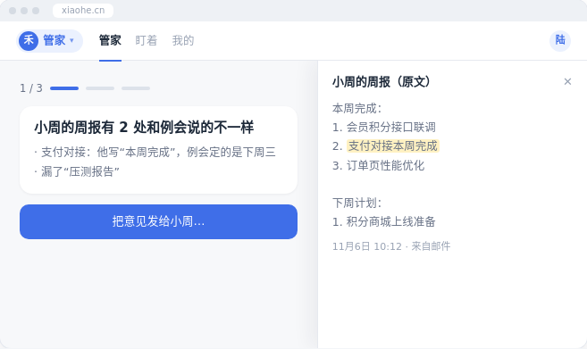
打磨版 · 打开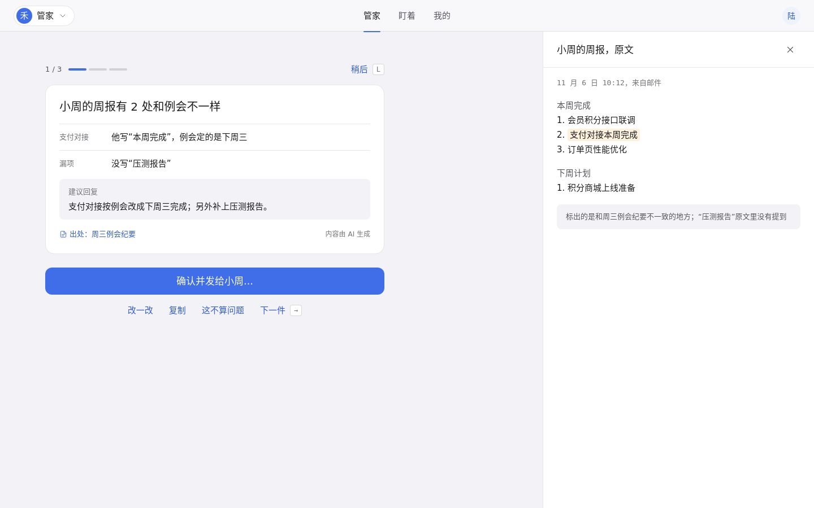
改了什么
- 左边保持当前这一件，右侧 480 宽面板，不离开这件
- 不一致的地方用浅琥珀底标出，底部说明对照的是哪份纪要
- “✕”换成线框图标按钮
原稿 · ④ 发了吗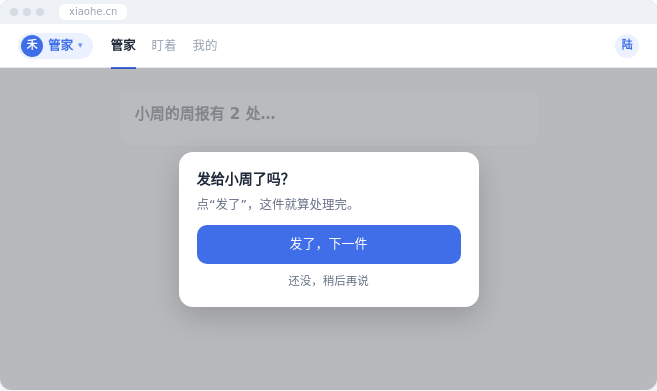
打磨版 · 打开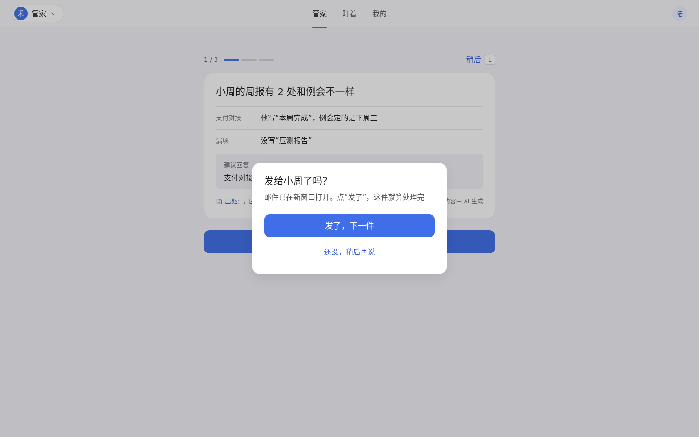
改了什么
- 对话框 400 宽、居中，标题 20、说明一行
- 说明补上“邮件已在新窗口打开”，让用户知道为什么被问
原稿 · ⑤ 管家面板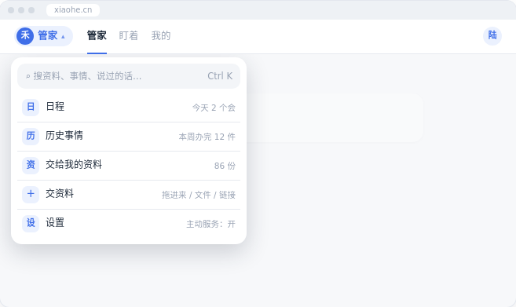
打磨版 · 打开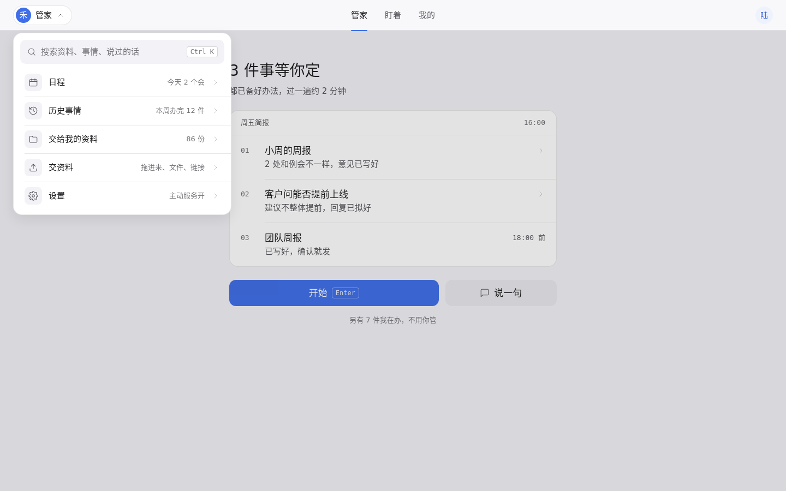
改了什么
- “日 / 历 / 资 / ＋ / 设”汉字方块换成线框图标，和 App 下拉面板同一套
- 搜索框“⌕ 搜…”改成图标 + 文字，Ctrl K 用键帽
原稿 · ⑥ 盯着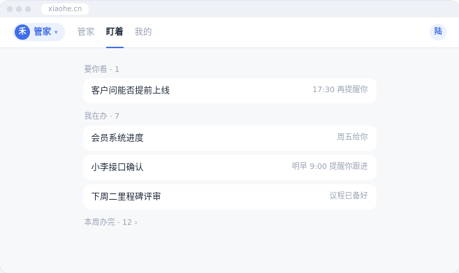
打磨版 · 打开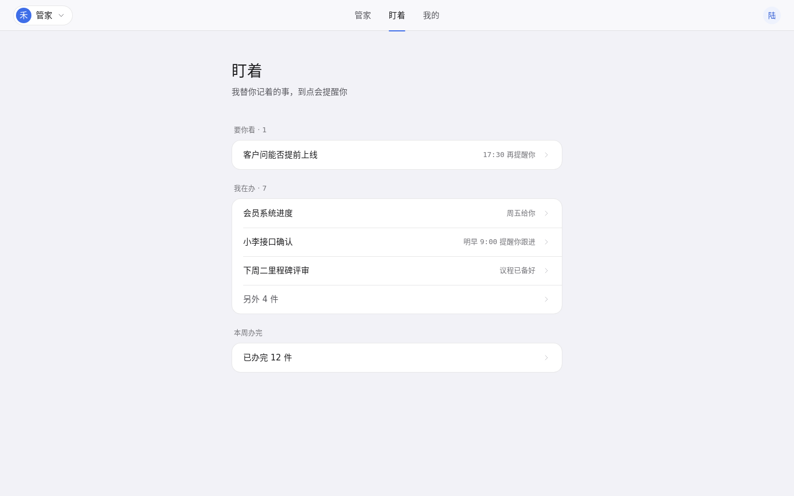
改了什么
- 加页面标题和一句说明
- 分组标题移到卡片外，按 要你看 / 我在办 / 本周办完 分卡
- 时间用等宽数字；“我在办 · 7”补一行“另外 4 件”，数字对得上
原稿 · ⑦ 过完
打磨版 · 打开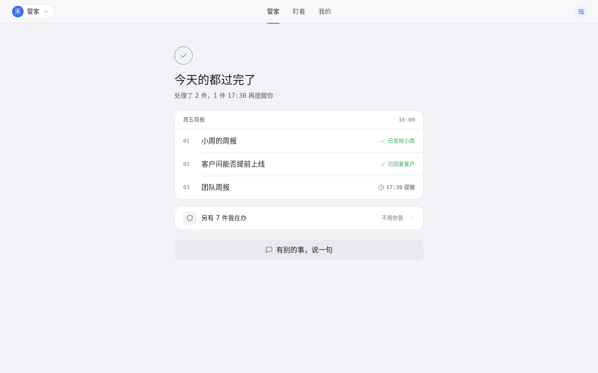
改了什么
- 居中的浅蓝底大勾，换成和 App 结束页同款的 44px 描边勾，靠左
- 加一张同款简报卡，逐件写结果：已发给小周、已回复客户、17:30 提醒
原稿 · ⑧ 第 1 天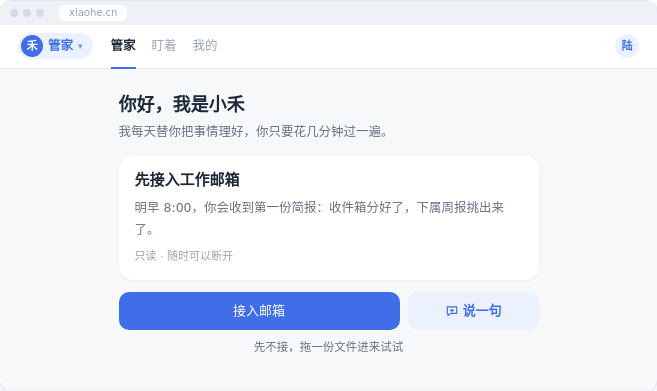
打磨版 · 打开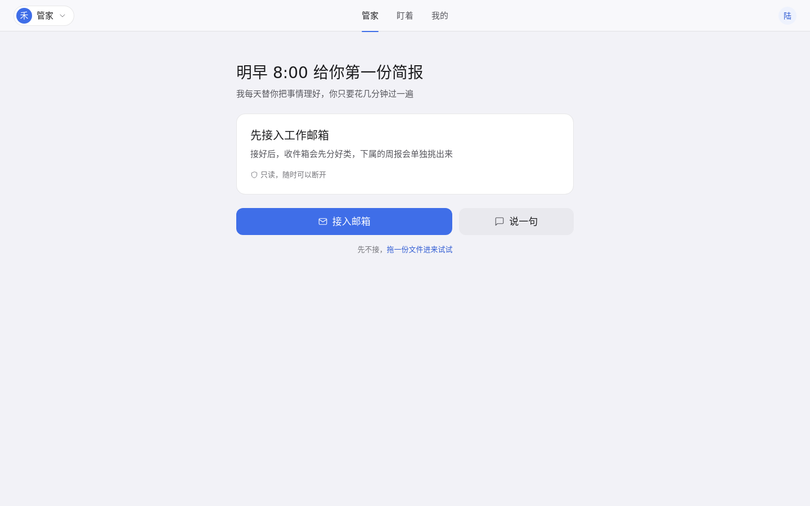
改了什么
- 标题从“你好，我是小禾”改成用户能得到什么：“明早 8:00 给你第一份简报”
- “只读 · 随时可以断开”加盾牌图标，做成出处行同款
- “先不接”后面的动作做成链接
全局：字号 13 / 15 / 17 / 20 / 28，字重 400 / 500；间距 4 的倍数；8 屏共用一套顶栏（shell.js）和样式（web.css），图标为 1.5 描边线框图标；不用 emoji、渐变和彩色阴影。静态草图，不能点击。原稿里的 W2 两栏方案是备选，没有画。
按 unslop by @heydamir（CC BY 4.0）流程完成